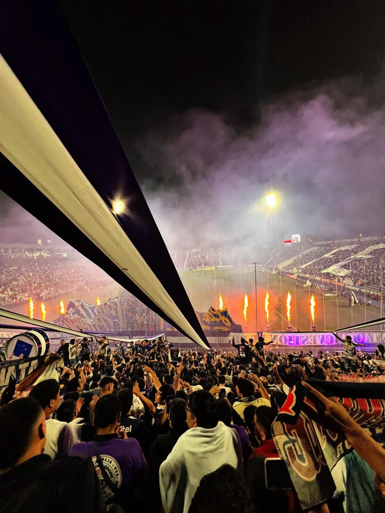

Naadam Festival - Mongolia
Two days of culture, equestrian sports, and traditional competitions in the heart of Mongolia.
Nomad Culture
Unique sportevent
2026
Explore a selection of trips and sporting experiences organized by Beyond the Pitch - from traditional festivals to unique sport experiences. Click on a project for details and practical information.
Two days of culture, equestrian sports, and traditional competitions in the heart of Mongolia.

Watch Peru's most passionate club, and experience Lima's culture and foodscene as a local.

Discover grassroots passion, local rivalry, and the social aspect of the Irish traditional sports.